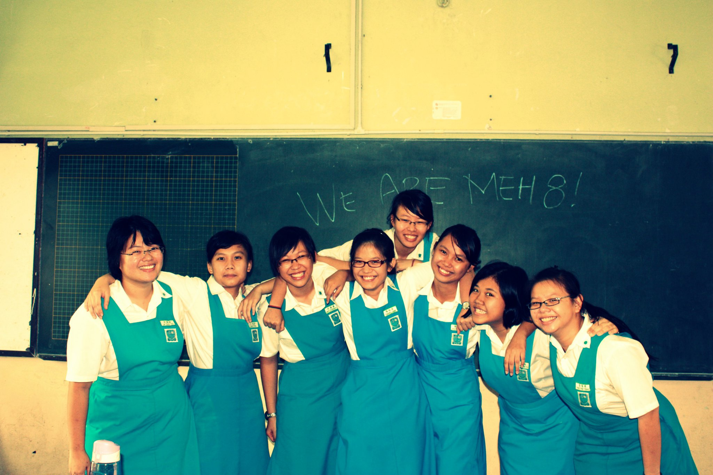

Through The Years



We met on Tinder 3 years ago while both going to college in Boston. JKhoo picked Joce up with the smooth, smooth line: "That's a great name you have there" and had her hook, line, and sinker. We met in real life outside a tea shop in Cambridge, and walked around Harvard Square for a couple hours for our first date. It was easy and comfortable being with each other from the beginning, and we've yet to get tired of making each other laugh. Together, we enjoy spending time outdoors, cooking (& more importantly, eating), playing music, and learning to make websites. We can't wait to get married and continue to confuse people with our shared first name.
- The Jocelyns
JKhoo is very dedicated, both to her work and the people she cares about. She grew up in Malaysia, but moved across the world to Boston to study music therapy at Berklee. She now works as a music therapist in both hospice and school settings, where her day-to-day work often involves helping people through some of the hardest days of their lives and using music to connect with people in ways that words alone often can’t. (It is quite humbling to come home from work and hear what she did that day!)
With her drive to work hard and help others, she may seem like a pretty serious person, but there's an adorable goofball side to her that I love. She won me over on our second date by straight-up being a weirdo and doing silly impressiosn to make me laugh. This mix of funny and caring makes her a great person to be around, and both of my sisters have told me she's their favorite Jocelyn.
For fun, JKhoo enjoys playing & listening to music, hiking, and adventures of all types. I think she is happiest when she’s sharing good food with friends. She really values her friends and stays close to them all but geographically. She has a passionate love of french fries, and told me quite early in our relationship that if I was ever to propose, a ring is optional but french fries are required.
- Joce
JKhoo here writing for Joce.
When I first met Joce, I called her JLo and that nickname stuck ever since. She also likes to be called Joce, so I change it up now and then to keep her on her feet.
Joce is wicked smaht, she went to MIT for mechanical engineering - she is now a software engineer for Sea Machines Robotics and is also a Coast Guard reservist! I’m super proud of her!
Joce is also very kind - she often picks up branches that people might trip over when we go on our hikes. Just before she left for Boot Camp and A School for the Coast Guard - she left little notes around the apartment, which makes our place filled with love in her absence.
Joce is also very talented - she cooks an awesomely delicious palak paneer, pizza, bread, corn chowder, blueberry cake, etc. She also plays excellent piano and guitar, I love listening to her and making music with her.
So that’s a little bit about Joce
- JKhoo